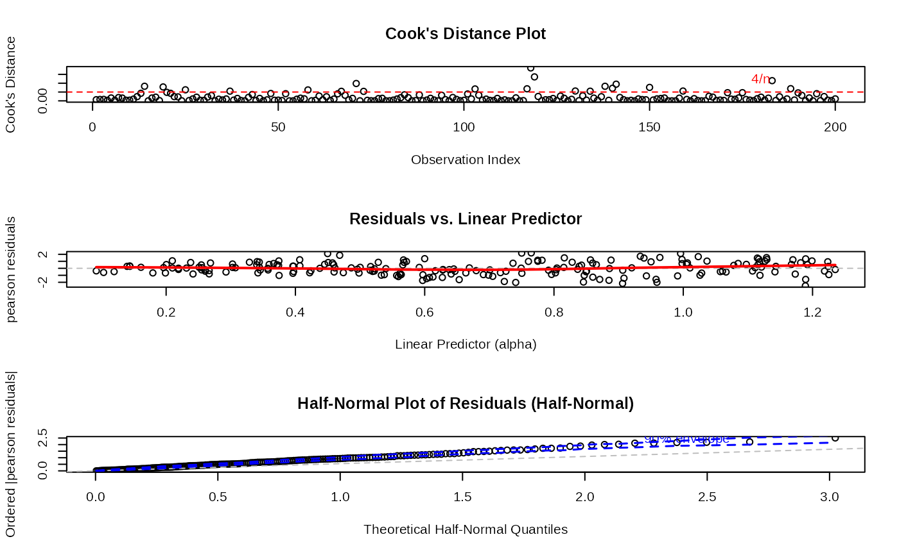
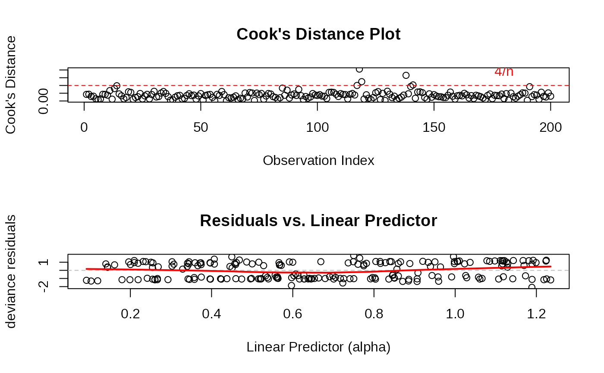
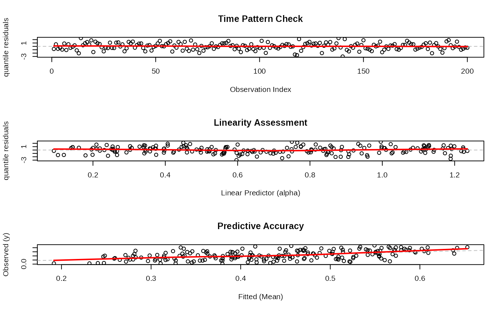
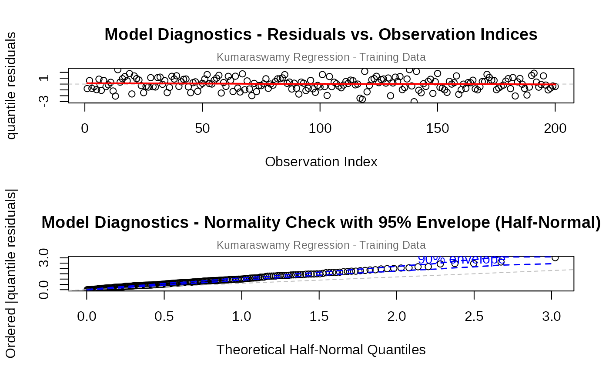
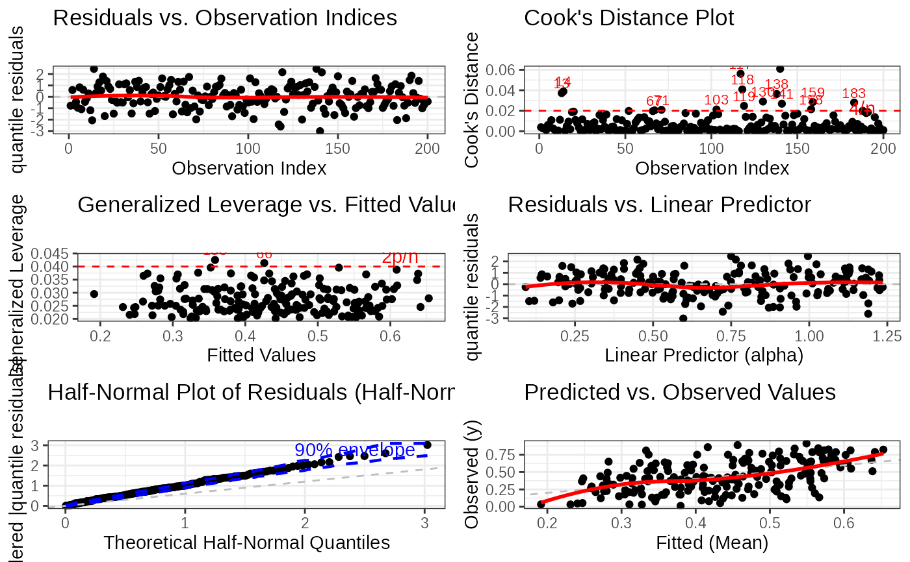
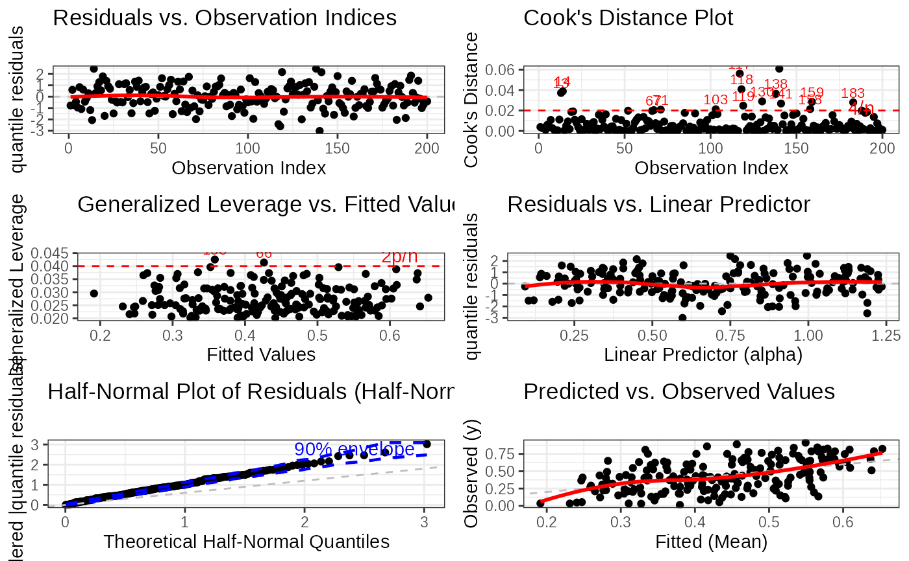
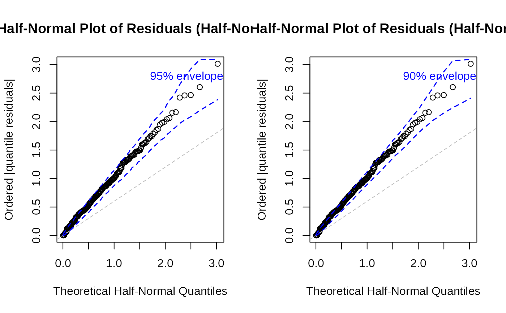
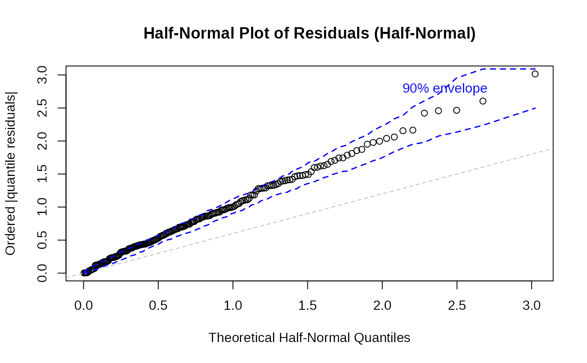
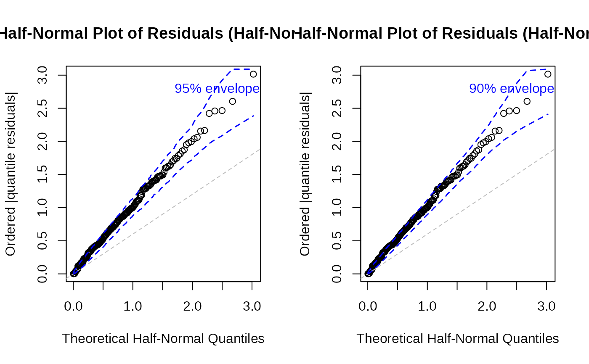
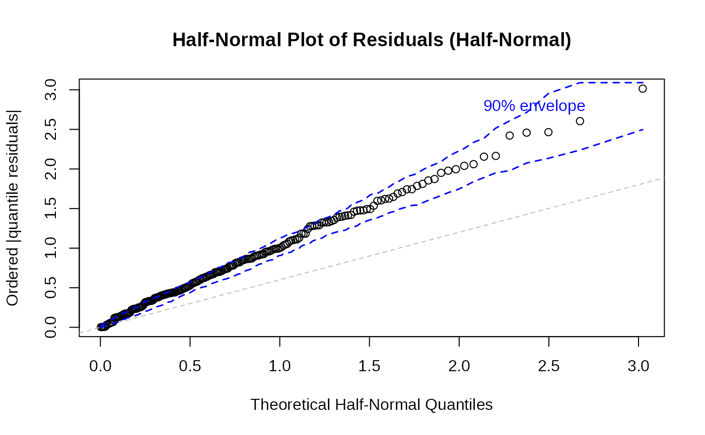

Diagnostic Plots for Generalized Kumaraswamy Regression Models
plot.gkwreg.RdProduces a set of diagnostic plots for assessing the adequacy of a fitted
Generalized Kumaraswamy (GKw) regression model (objects of class "gkwreg").
Options allow selection of specific plots, choice of residual type, and plotting
using either base R graphics or ggplot2.
Usage
# S3 method for class 'gkwreg'
plot(
x,
which = 1:6,
caption = c("Residuals vs. Observation Indices", "Cook's Distance Plot",
"Generalized Leverage vs. Fitted Values", "Residuals vs. Linear Predictor",
"Half-Normal Plot of Residuals", "Predicted vs. Observed Values"),
sub.caption = paste(deparse(x$call), collapse = "\n"),
main = "",
ask = prod(par("mfcol")) < length(which) && dev.interactive(),
...,
type = c("quantile", "pearson", "deviance"),
family = NULL,
nsim = 100,
level = 0.9,
use_ggplot = FALSE,
arrange_plots = FALSE,
sample_size = NULL,
theme_fn = ggplot2::theme_minimal,
save_diagnostics = FALSE
)Arguments
- x
An object of class
"gkwreg", typically the result of a call togkwreg.- which
Integer vector specifying which diagnostic plots to produce. If a subset of the plots is required, specify a subset of the numbers 1:6. Defaults to
1:6. The plots correspond to:Residuals vs. Observation Indices: Checks for time trends or patterns.
Cook's Distance Plot: Helps identify influential observations.
Generalized Leverage vs. Fitted Values: Identifies points with high leverage.
Residuals vs. Linear Predictor: Checks for non-linearity and heteroscedasticity.
Half-Normal Plot of Residuals (with simulated envelope): Assesses normality of residuals, comparing against simulated quantiles.
Predicted vs. Observed Values: Checks overall model prediction accuracy.
- caption
Character vector providing captions (titles) for the plots. Its length must be at least
max(which). Defaults are provided for plots 1-6.- sub.caption
Character string used as a common subtitle positioned above all plots (especially when multiple plots are arranged). Defaults to the deparsed model call.
- main
An optional character string to be prepended to the individual plot captions (from the
captionargument).- ask
Logical. If
TRUE(and using base R graphics with multiple plots on an interactive device), the user is prompted before displaying each plot. Defaults toTRUEif more plots are requested than fit on the current screen layout.- ...
Additional arguments passed to the underlying plotting functions (e.g., graphical parameters like
col,pch,cexfor base R plots).- type
Character string indicating the type of residuals to be used for plotting. Defaults to
"quantile". Valid options are:"quantile": Randomized quantile residuals (Dunn & Smyth, 1996). Recommended for bounded responses as they should be approximately N(0,1) if the model is correctly specified."pearson": Pearson residuals (response residual standardized by estimated standard deviation). Useful for checking the variance function."deviance": Deviance residuals. Related to the log-likelihood contribution of each observation.
- family
Character string specifying the distribution family assumptions to use when calculating residuals and other diagnostics. If
NULL(default), the family stored within the fittedobjectis used. Specifying a different family can be useful for diagnostic comparisons. Available options match those ingkwreg:"gkw", "bkw", "kkw", "ekw", "mc", "kw", "beta".- nsim
Integer. Number of simulations used to generate the envelope in the half-normal plot (
which = 5). Defaults to 100. Must be positive.- level
Numeric. The confidence level (between 0 and 1) for the simulated envelope in the half-normal plot (
which = 5). Defaults to 0.90.- use_ggplot
Logical. If
TRUE, plots are generated using theggplot2package. IfFALSE(default), base R graphics are used. Requires theggplot2package to be installed if set toTRUE.- arrange_plots
Logical. Only relevant if
use_ggplot = TRUEand multiple plots are requested (length(which) > 1). IfTRUE, attempts to arrange the generatedggplotobjects into a grid using either thegridExtraorggpubrpackage (requires one of them to be installed). Defaults toFALSE.- sample_size
Integer or
NULL. If specified as an integer less than the total number of observations (x$nobs), a random sample of this size is used for calculating diagnostics and plotting. This can be useful for speeding up plots with very large datasets. Defaults toNULL(use all observations).- theme_fn
A function. Only relevant if
use_ggplot = TRUE. Specifies aggplot2theme function to apply to the plots (e.g.,theme_bw,theme_classic). Defaults toggplot2::theme_minimal.- save_diagnostics
Logical. If
TRUE, the function invisibly returns a list containing the calculated diagnostic measures (residuals, leverage, Cook's distance, etc.) instead of the model object. IfFALSE(default), the function invisibly returns the original model objectx.
Value
Invisibly returns either the original fitted model object x
(if save_diagnostics = FALSE) or a list containing the calculated
diagnostic measures used for plotting (if save_diagnostics = TRUE).
Primarily called for its side effect of generating plots.
Details
Diagnostic plots are essential for evaluating the assumptions and adequacy of
fitted regression models. This function provides several standard plots adapted
for gkwreg objects.
The choice of residual type (type) is important. For models with bounded
responses like the GKw family, quantile residuals (type = "quantile") are
generally preferred as they are constructed to be approximately normally distributed
under a correctly specified model, making standard diagnostic tools like QQ-plots
more directly interpretable.
The plots help to assess:
Plot 1 (Residuals vs. Index): Potential patterns or autocorrelation over time/index.
Plot 2 (Cook's Distance): Observations with disproportionately large influence on the estimated coefficients.
Plot 3 (Leverage vs. Fitted): Observations with unusual predictor combinations (high leverage) that might influence the fit.
Plot 4 (Residuals vs. Linear Predictor): Non-linearity in the predictor-response relationship or non-constant variance (heteroscedasticity).
Plot 5 (Half-Normal Plot): Deviations from the assumed residual distribution (ideally normal for quantile residuals). Points outside the simulated envelope are potentially problematic.
Plot 6 (Predicted vs. Observed): Overall goodness-of-fit and potential systematic over- or under-prediction.
The function relies on internal helper functions to calculate the necessary diagnostic
quantities and generate the plots using either base R or ggplot2.
Examples
# \donttest{
# Assume 'mydata' exists with response 'y' and predictors 'x1', 'x2'
# and that rgkw() is available and data is appropriate (0 < y < 1).
set.seed(456)
n <- 150
x1 <- runif(n, -1, 1)
x2 <- rnorm(n)
alpha <- exp(0.5 + 0.2 * x1)
beta <- exp(0.8 - 0.3 * x1 + 0.1 * x2)
gamma <- exp(0.6)
delta <- plogis(0.0 + 0.2 * x1)
lambda <- exp(-0.2 + 0.1 * x2)
# Use stats::rbeta as placeholder if rgkw is not available
y <- stats::rbeta(n, shape1 = gamma * alpha, shape2 = delta * beta) # Approximation
y <- pmax(pmin(y, 1 - 1e-7), 1e-7)
mydata <- data.frame(y = y, x1 = x1, x2 = x2)
# Fit a GKw model
model <- gkwreg(y ~ x1 | x1 + x2 | 1 | x1 | x2, data = mydata, family = "gkw")
# --- Generate default base R plots (prompts for each plot) ---
plot(model)
#> Simulating envelope ( 100 iterations): .......... Done!




# --- Generate specific plots using base R ---
plot(model, which = c(1, 5), type = "quantile") # Residuals vs Index, Half-Normal
#> Simulating envelope ( 100 iterations): .......... Done!
 # --- Generate plots using ggplot2 (requires ggplot2 package) ---
# Ensure ggplot2 is installed: install.packages("ggplot2")
plot(model, which = c(4, 6), use_ggplot = TRUE) # Res vs Lin Pred, Pred vs Obs

# --- Generate all ggplot2 plots and arrange them (requires gridExtra or ggpubr) ---
# Ensure gridExtra is installed: install.packages("gridExtra")
# plot(model, use_ggplot = TRUE, arrange_plots = TRUE, ask = FALSE)
# --- Generate plots using Pearson residuals ---
plot(model, which = 4, type = "pearson") # Res vs Lin Pred using Pearson residuals
# --- Save diagnostic measures instead of plotting ---
diagnostics <- plot(model, save_diagnostics = TRUE)
#> Simulating envelope ( 100 iterations): .......... Done!
# --- Generate plots using ggplot2 (requires ggplot2 package) ---
# Ensure ggplot2 is installed: install.packages("ggplot2")
plot(model, which = c(4, 6), use_ggplot = TRUE) # Res vs Lin Pred, Pred vs Obs

# --- Generate all ggplot2 plots and arrange them (requires gridExtra or ggpubr) ---
# Ensure gridExtra is installed: install.packages("gridExtra")
# plot(model, use_ggplot = TRUE, arrange_plots = TRUE, ask = FALSE)
# --- Generate plots using Pearson residuals ---
plot(model, which = 4, type = "pearson") # Res vs Lin Pred using Pearson residuals
# --- Save diagnostic measures instead of plotting ---
diagnostics <- plot(model, save_diagnostics = TRUE)
#> Simulating envelope ( 100 iterations): .......... Done!
 

head(diagnostics$residuals)
#> NULL
head(diagnostics$cooks_distance)
#> NULL
# }


head(diagnostics$residuals)
#> NULL
head(diagnostics$cooks_distance)
#> NULL
# }